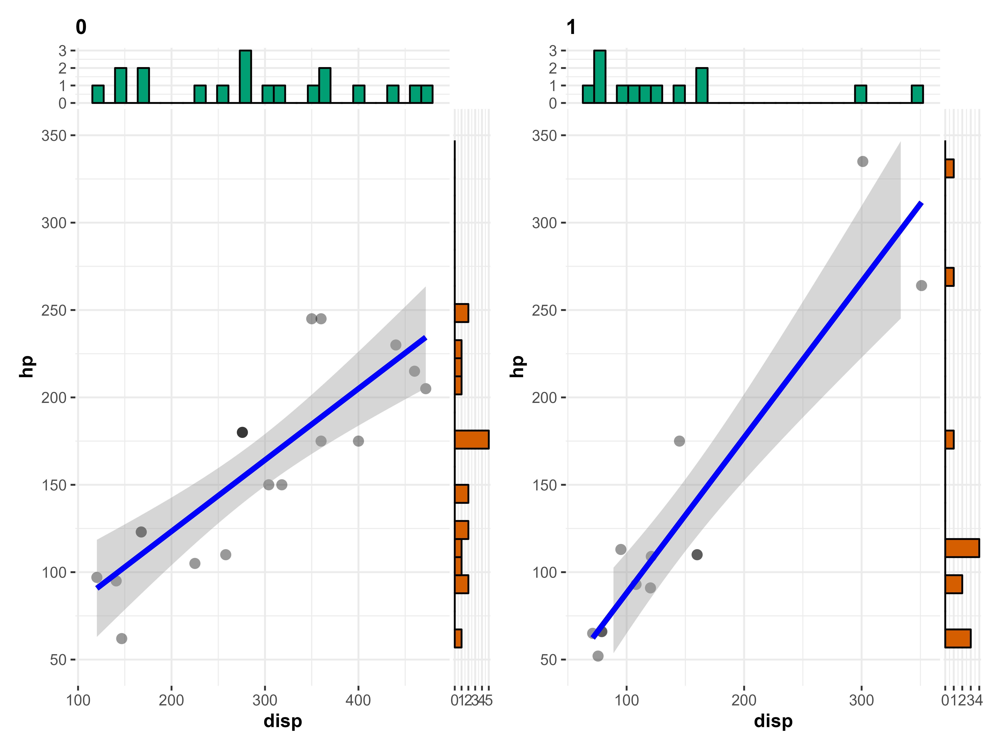
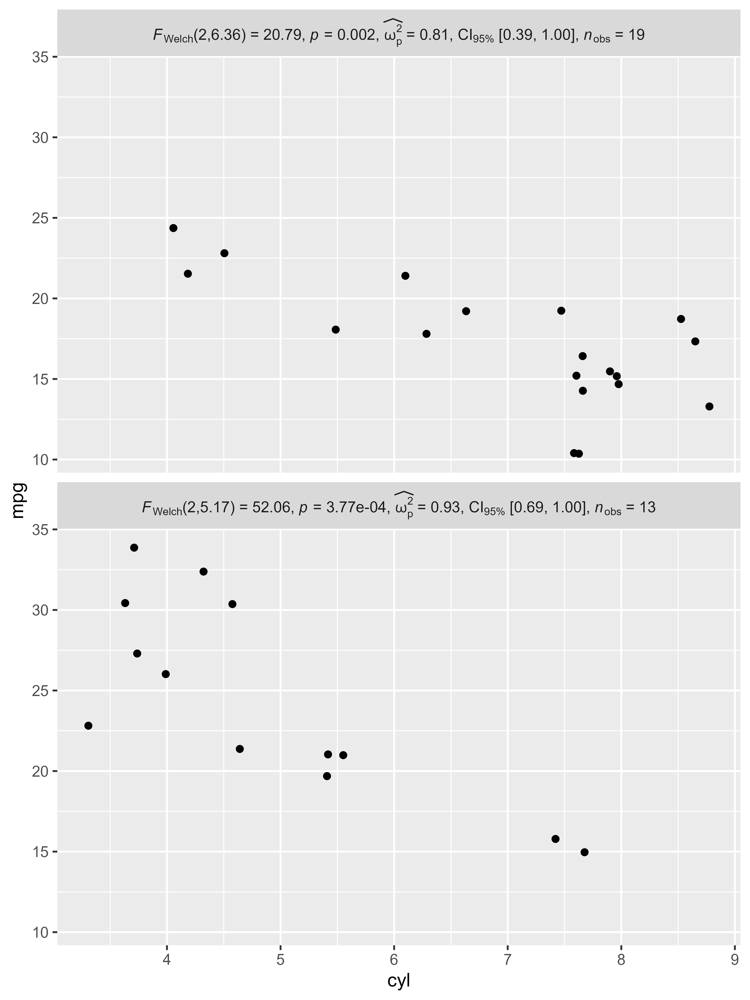
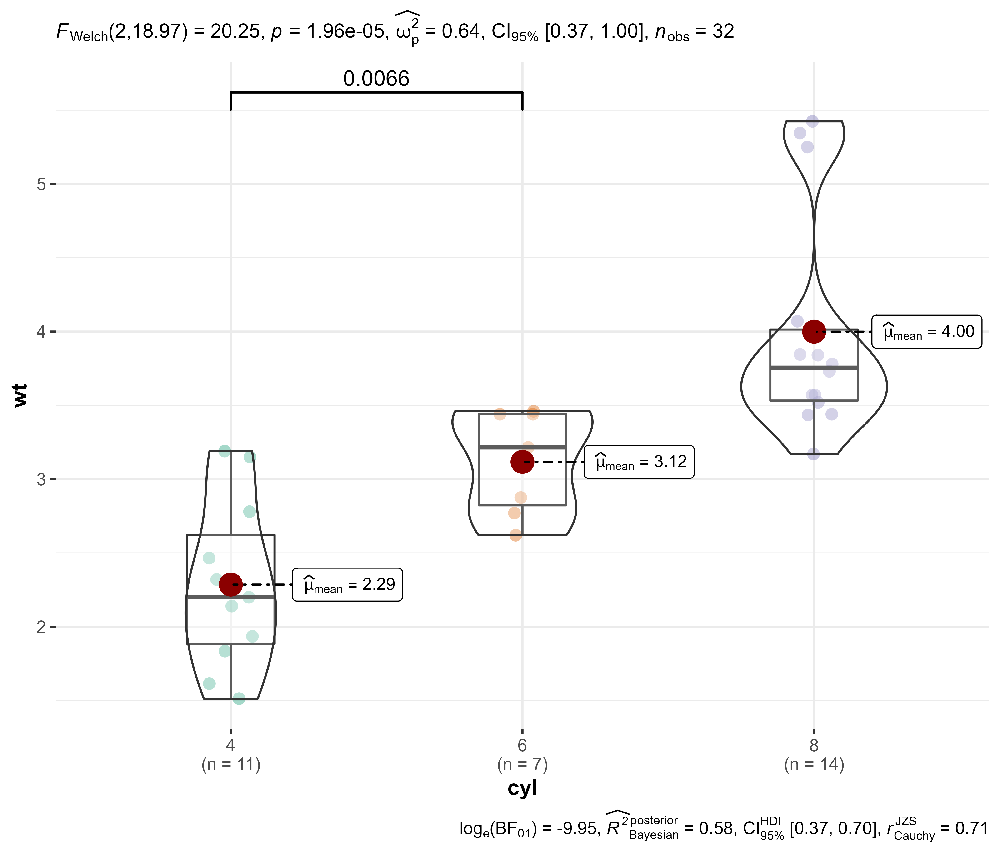
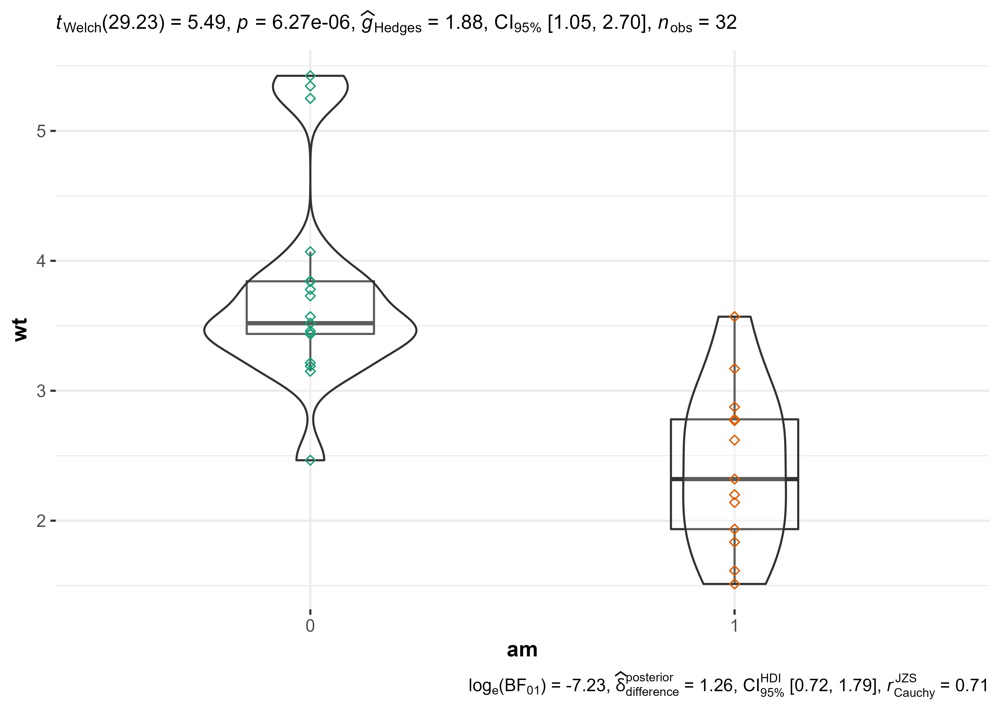
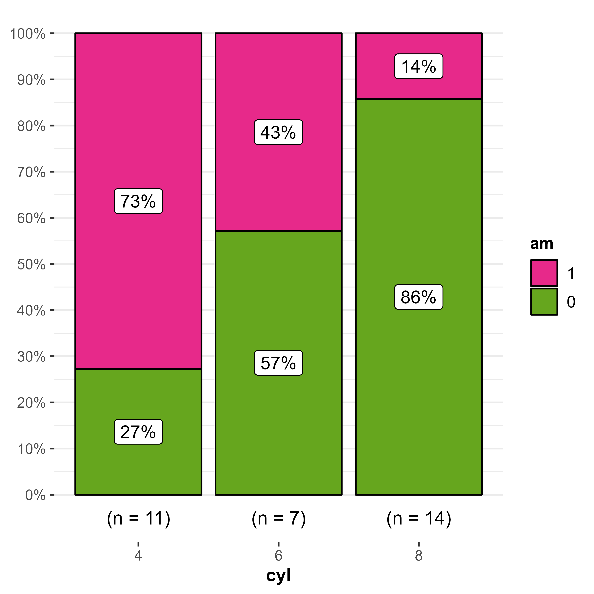
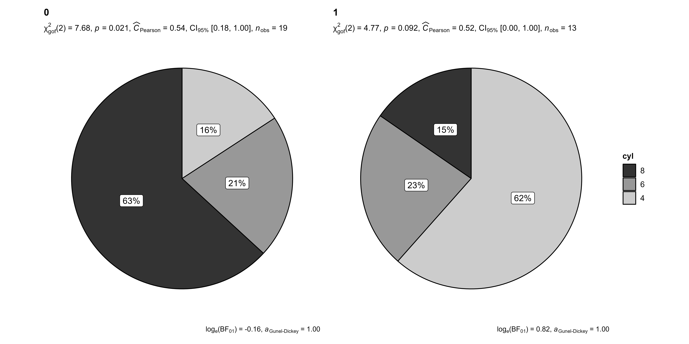
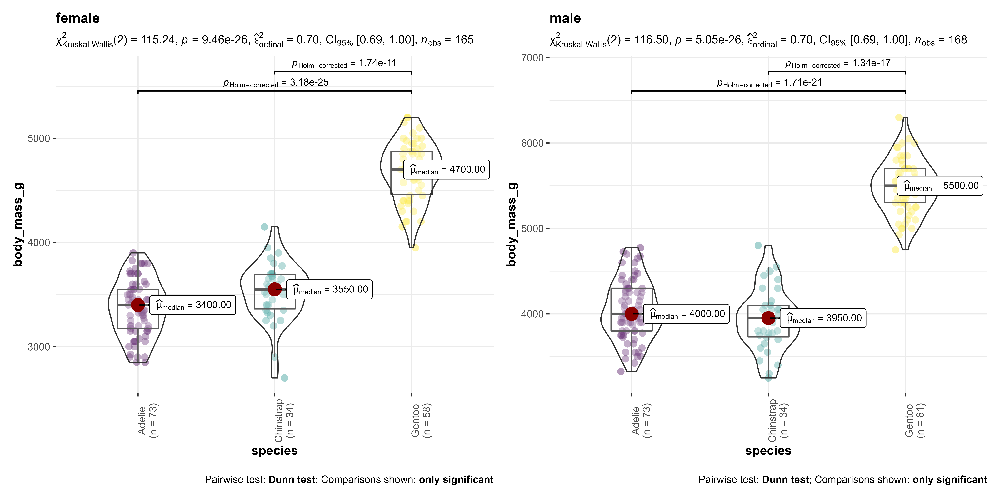

FAQ
Here are some of the common questions that have been asked in GitHub issues and on social media platforms.
I just want the plot, not the statistical details. How can I turn them off?
All functions in ggstatsplot that display results from statistical analysis in a subtitle have argument results.subtitle. Setting it to FALSE will return only the plot.
How can I customize the details contained in the subtitle?
Sometimes you may not wish include so many details in the subtitle. In that case, you can extract the expression and copy-paste only the part you wish to include. For example, here only statistic and p-values are included:
# setup
set.seed(123)
library(ggstatsplot)
library(ggplot2)
library(statsExpressions)
# extracting detailed expression
(res_expr <- expr_anova_parametric(iris, Species, Sepal.Length, var.equal = TRUE))
#> paste(italic("F")["Fisher"], "(", "2", ",", "147", ") = ", "119.26",
#> ", ", italic("p"), " = ", "1.67e-31", ", ", widehat(omega["p"]^2),
#> " = ", "0.61", ", CI"["95%"], " [", "0.52", ", ", "0.68",
#> "]", ", ", italic("n")["obs"], " = ", 150L)
# adapting the details to your liking
ggplot(iris, aes(x = Species, y = Sepal.Length)) +
geom_boxplot() +
labs(subtitle = ggplot2::expr(paste(
NULL, italic("F"), "(", "2",
",", "147", ") = ", "119.26", ", ",
italic("p"), " = ", "1.67e-31"
)))
I am getting Error in grid.Call error
Sometimes, if you are working in RStudio, you might see the following error-
Error in grid.Call(C_textBounds, as.graphicsAnnot(x$label), x$x, x$y, :
polygon edge not foundThere is no unique solution for this. Just Google this error and see if any of those solutions solve your problem.
If not, pray to the old and the new gods, and try again. It might just solve your problem. 🤷
What statistical test was carried out?
In case you are not sure what was the statistical test that produced the results shown in the subtitle of the plot, the best way to get that information is to either look at the documentation for the function used or check out the associated vignette.
Summary of all analysis is handily available in README: https://github.com/IndrajeetPatil/ggstatsplot/blob/master/README.md
How can I use ggstatsplot functions in a for loop?
Given that all functions in ggstatsplot use tidy evaluation, running these functions in a for loop requires minor adjustment to how inputs are entered:
# setup
data(mtcars)
library(ggstatsplot)
col.name <- colnames(mtcars)
# executing the function in a `for` loop
for (i in 3:length(col.name)) {
ggbetweenstats(
data = mtcars,
x = cyl,
y = !!col.name[i]
)
}That said, if repeating function execution across multiple columns in a dataframe in what you want to do, I will recommend you to have a look at purrr-based solution:
How can I have uniform Y-axes ranges in grouped_ functions?
# setup
set.seed(123)
library(ggstatsplot)
combine_plots2(
list(
# with unequal Y-axes ranges
grouped_ggscatterstats(
mtcars,
disp,
hp,
grouping.var = am,
results.subtitle = FALSE,
title.text = "before"
),
# with equal Y-axes ranges
grouped_ggscatterstats(
mtcars,
disp,
hp,
grouping.var = am,
results.subtitle = FALSE,
ggplot.component =
list(ggplot2::scale_y_continuous(breaks = seq(50, 350, 50), limits = (c(50, 350)))),
title.text = "after"
)),
plotgrid.args = list(nrow = 2)
)
Does ggstatsplot work with plotly?
The plotly R graphing library makes it easy to produce interactive web graphics via plotly.js.
The ggstatsplot functions are compatible with plotly.
# for reproducibility
set.seed(123)
library(ggstatsplot)
library(plotly)
# creating ggplot object with `ggstatsplot`
p <-
ggstatsplot::ggbetweenstats(
data = mtcars,
x = cyl,
y = mpg
)
# converting to plotly object
plotly::ggplotly(p, width = 480, height = 480)
How can I use grouped_ functions with more than one group?
Currently, the grouped_ variants of functions only support repeating the analysis across a single grouping variable. Often, you have to run the same analysis across a combination of more than two grouping variables. This can be easily achieved using purrr package.
Here is an example-
# setup
set.seed(123)
library(ggstatsplot)
# creating a list by splitting dataframe by combination of two different
# grouping variables
df_list <-
mpg %>%
dplyr::filter(drv %in% c("4", "f"), fl %in% c("p", "r")) %>%
split(x = ., f = list(.$drv, .$fl), drop = TRUE)
# checking if the length of the list is 4
length(df_list)
#> [1] 4
# running correlation analyses between
# this will return a *list* of plots
plot_list <-
purrr::pmap(
.l = list(
data = df_list,
x = "displ",
y = "hwy",
results.subtitle = FALSE,
marginal.type = "densigram"
),
.f = ggstatsplot::ggscatterstats
)
# arragen the list in a single plot
ggstatsplot::combine_plots(
plotlist = plot_list,
nrow = 2,
labels = c("(i)", "(ii)", "(iii)", "(iv)")
)
How can I include statistical expressions in facet labels?
set.seed(123)
library(ggplot2)
library(ggstatsplot)
# data
mtcars1 <- mtcars
statistics <-
grouped_ggbetweenstats(
data = mtcars1,
x = cyl,
y = mpg,
grouping.var = am,
output = "subtitle"
)
mtcars1$am <- factor(mtcars1$am, levels = c(0, 1), labels = statistics)
# plot
mtcars1 %>%
ggplot(aes(x = cyl, y = mpg)) +
geom_jitter() +
facet_wrap(
vars(am),
ncol = 1,
strip.position = "top",
labeller = ggplot2::label_parsed
)
Can you customize which pairs are shown in pairwise comparisons?
Currently, for ggbetweenstats and ggwithinstats, you can either display all significant comparisons, all non-significant comparisons, or all comparisons. But what if I am only interested in just one particular comparison?
Here is a workaround using ggsignif:
set.seed(123)
library(ggstatsplot)
library(ggsignif)
# displaying only one comparison
ggbetweenstats(mtcars, cyl, wt, pairwise.comparisons = FALSE) +
geom_signif(comparisons = list(c("4", "6")))
How to access dataframe with results from pairwise comparisons?
library(ggstatsplot)
library(ggplot2)
# way-1
p <- ggbetweenstats(mtcars, cyl, wt)
pb <- ggplot_build(p)
pb$plot$plot_env$df_pairwise
#> # A tibble: 3 x 8
#> group1 group2 statistic p.value significance test.details
#> <chr> <chr> <dbl> <dbl> <chr> <chr>
#> 1 4 6 5.39 0.00831 ** Games-Howell test
#> 2 4 8 9.11 0.0000124 *** Games-Howell test
#> 3 6 8 5.12 0.00831 ** Games-Howell test
#> p.value.adjustment label
#> <chr> <chr>
#> 1 Holm list(~italic(p)[Holm-corrected]==0.008)
#> 2 Holm list(~italic(p)[Holm-corrected]==1.24e-05)
#> 3 Holm list(~italic(p)[Holm-corrected]==0.008)
# way-2
library(pairwiseComparisons)
pairwise_comparisons(mtcars, cyl, wt)
#> # A tibble: 3 x 8
#> group1 group2 statistic p.value significance test.details
#> <chr> <chr> <dbl> <dbl> <chr> <chr>
#> 1 4 6 5.39 0.00831 ** Games-Howell test
#> 2 4 8 9.11 0.0000124 *** Games-Howell test
#> 3 6 8 5.12 0.00831 ** Games-Howell test
#> p.value.adjustment label
#> <chr> <chr>
#> 1 Holm list(~italic(p)[Holm-corrected]==0.008)
#> 2 Holm list(~italic(p)[Holm-corrected]==1.24e-05)
#> 3 Holm list(~italic(p)[Holm-corrected]==0.008)
How to access dataframe with results from ggpiestats and ggbarstats?
# setup
set.seed(123)
library(ggplot2)
# plot
p <- ggpiestats(mtcars, am, cyl)
# build ggplot object
pb <- ggplot2::ggplot_build(p)
# dataframe with proportion test results
pb$plot$plot_env$df_proptest
#> # A tibble: 3 x 10
#> cyl counts perc N statistic df p.value
#> <fct> <int> <dbl> <chr> <dbl> <dbl> <dbl>
#> 1 8 14 43.8 (n = 14) 7.14 1 0.00753
#> 2 6 7 21.9 (n = 7) 0.143 1 0.705
#> 3 4 11 34.4 (n = 11) 2.27 1 0.132
#> method significance
#> <chr> <chr>
#> 1 Chi-squared test for given probabilities **
#> 2 Chi-squared test for given probabilities ns
#> 3 Chi-squared test for given probabilities ns
#> label
#> <chr>
#> 1 list(~chi['gof']^2~(1)==7.14, ~italic(p)=='0.008', ~italic(n)==14)
#> 2 list(~chi['gof']^2~(1)==0.14, ~italic(p)=='0.705', ~italic(n)==7)
#> 3 list(~chi['gof']^2~(1)==2.27, ~italic(p)=='0.132', ~italic(n)==11)
# dataframe with counts and proportions details
pb$plot$plot_env$df_descriptive
#> # A tibble: 6 x 5
#> cyl am counts perc label
#> <fct> <fct> <int> <dbl> <chr>
#> 1 4 1 8 72.7 73%
#> 2 6 1 3 42.9 43%
#> 3 8 1 2 14.3 14%
#> 4 4 0 3 27.3 27%
#> 5 6 0 4 57.1 57%
#> 6 8 0 12 85.7 86%
How can I remove a a particular geom layer from the plot?
Sometimes you may not want a particular geom layer to be displayed. You can remove them using gginnards.
For example, let’s say we want to remove the geom_point() from ggwithinstats default plot.
# needed libraries
library(ggstatsplot)
library(gginnards)
# plot with all geoms
p <-
ggwithinstats(
data = bugs_long,
x = condition,
y = desire,
results.subtitle = FALSE,
pairwise.comparisons = FALSE
)
# delete `geom` corresponding to violin
gginnards::delete_layers(x = p, match_type = "GeomViolin")This can be helpful to add a new layer with aesthetic specifications of your liking.
# needed libraries
set.seed(123)
library(ggstatsplot)
library(gginnards)
library(ggplot2)
# basic plot without mean tagging
p <-
ggwithinstats(
data = bugs_long,
x = condition,
y = desire,
mean.plotting = FALSE
)
# delete the geom_point layer
p <- gginnards::delete_layers(x = p, match_type = "GeomPoint")
# add a new layers for points with a different shape
p + geom_point(shape = 23, aes(color = condition))
How can I modify the fill colors with custom values?
Sometimes you may not be satisfied with the available color palette values. In this case, you can also change the colors by manually specifying these values.
# needed libraries
set.seed(123)
library(ggstatsplot)
library(ggplot2)
ggbarstats(mtcars, am, cyl, results.subtitle = FALSE) +
scale_fill_manual(values = c("#E7298A", "#66A61E"))
The same can also be done for grouped_ functions:
ggstatsplot::grouped_ggpiestats(
data = mtcars,
grouping.var = am,
x = cyl,
ggplot.component = ggplot2::scale_fill_grey()
)
How can I modify grouped_ outputs using ggplot2 functions?
All ggstatsplot are ggplot objects, which can be further modified, just like any other ggplot object. But exception to these are all plots returned by grouped_ functions, but there is a way to tackle this.
# needed libraries
set.seed(123)
library(ggstatsplot)
library(paletteer)
library(ggplot2)
library(palmerpenguins)
# plot
grouped_ggbetweenstats(
penguins,
species,
body_mass_g,
grouping.var = sex,
type = "np",
ggplot.component =
# modify further with `ggplot2` functions
list(
scale_color_manual(values = paletteer::paletteer_c("viridis::viridis", 3)),
theme(axis.text.x = element_text(angle = 90))
)
)
How can I extract dataframe containing results from ggstatsplot?
ggstatsplot can return expressions in the subtitle and caption, but what if you want to actually get back dataframe containing the results?
This is possible via statsExpressions: https://indrajeetpatil.github.io/statsExpressions/articles/dataframe_outputs.html
Suggestions
If you find any bugs or have any suggestions/remarks, please file an issue on GitHub: https://github.com/IndrajeetPatil/ggstatsplot/issues
Session Information
For details, see- https://indrajeetpatil.github.io/ggstatsplot/articles/web_only/session_info.html